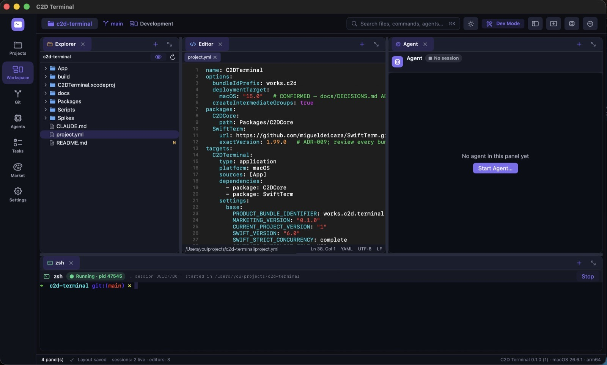
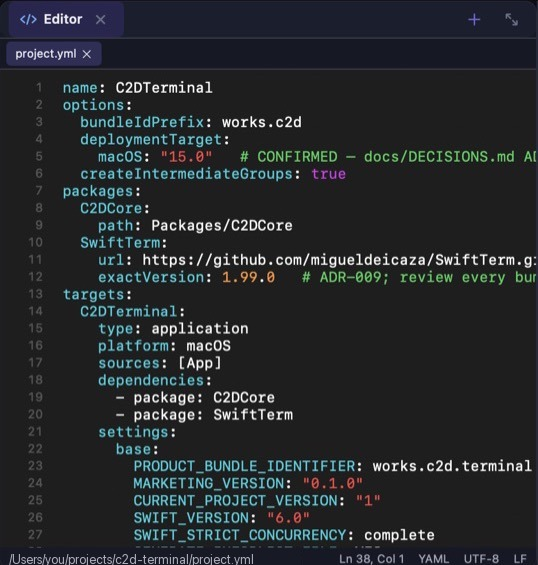

Cozy terminal.
Serious work.
C2D Terminal is a free, open-source macOS app where Claude Code, Git, an editor and real shells share one window.
Free and open source · Apple Silicon · macOS 15+
Requires Xcode and XcodeGen · install guide

Terminal, editor, Git and Claude Code in one cozy window.
No more hopping between five apps. Your terminal, editor, files, Git and agents live together, side by side.
A real terminal. Your dotfiles included.
Every shell runs in a genuine PTY with your own config and PATH. Tabs, splits, deep scrollback. Interactive CLIs feel right at home.

Claude Code gets a desk.
Its own panel, its own session. Other CLI agents join through adapters as they're verified.
Git, built right in.
Diffs, hunks, branches and commits next to your code.
Tests run where the work is.
Same terminal, same window. The proof sits right next to the claim.
Little tasks, kept tidy.
Details and dependencies. An agent saying "done" never marks it verified.
Agents propose. You decide.
Friendly doesn't mean pushy. Nothing gets committed or pushed just because an agent said it was finished.
Agent gets to work
In a real terminal, rooted in the project you picked.
zsh · Running · pid 47545Changes show up in Git
Every file, diff and hunk, waiting for your eyes.
CHANGES 9 · Stage allYou take a look, then commit
Run the tests, read the diff, press the button. Your call.
✔ tests passedMake it feel like yours.
Four built-in themes. Switch any time, instantly. Go on, try one.
For late-night commits and quiet focus.
45 seconds, one full loop.
Open a project, work beside Claude Code, run the tests and review the changes in Git.
What we promise.
Real shell compatibility comes first. Everything else is built on it.
Unknown, running, failed and done are never mixed up.
No C2D cloud required. Your code never goes to a C2D server.
Use your own provider accounts. We don't resell tokens.
A macOS terminal built for AI coding agents.
C2D Terminal is for Mac developers who run Claude Code every day and are tired of juggling a terminal app, an editor, a Git client and a chat window. It is a native Swift app for Apple Silicon Macs on macOS 15 or later, not an Electron shell.
If you already live in iTerm2, Warp, Ghostty or Terminal.app, you can keep them. C2D Terminal is where the agent work happens: each Claude Code session runs in its own real PTY, the files it touches show up in the built-in editor, and every change lands in the Git panel for you to review and commit. The terminal panes are real zsh, bash or fish shells with your own dotfiles, so your aliases, tmux and CLI tools work as they do anywhere else.
C2D Terminal is free and open source under the MIT license. You bring your own provider access. There is no C2D account to create, and your code never goes to a C2D server.
New to running Claude Code on a Mac? Start with reviewing its changes before you commit, running several sessions at once or setting up your terminal.
Ask away.
What is C2D Terminal?
C2D Terminal is a free, open-source (MIT) macOS app for Apple Silicon that runs Claude Code in real terminals, next to a code editor, a file explorer and a Git panel, all in one native window.
Is it a real terminal or a chat window?
A real terminal. In C2D Terminal every shell and agent runs in a genuine PTY with your own shell config and PATH.
Does my code leave my Mac?
Not to C2D. C2D Terminal has no server and no account. Agents talk to the provider you set up, with your own access, and you're responsible for those charges.
Will an agent commit or push for me?
C2D Terminal never commits, pushes, pulls or discards on its own: those are buttons you press. Claude Code itself follows its own permission settings, so add an ask or deny rule for git commit and git push if you want it to stop and check with you first. The review guide shows how.
Is there a download?
Not yet. C2D Terminal has no signed or notarized build, so today you build it from source with Xcode and XcodeGen. The install guide takes you through it.
How much does it cost?
C2D Terminal is free and open source: terminal, editor, Git and agents. If a paid tier ever comes, it will never lock core features. Claude Code itself needs an Anthropic account with a paid plan or API access.
How is this different from iTerm2 or Warp?
Those are terminal emulators. C2D Terminal is a workspace: real PTY terminals plus an editor, a Git panel and a dedicated place for Claude Code sessions, all in one native macOS window. Keep your favorite terminal for everything else.
Does it work with Codex or other agents?
Claude Code is the agent verified in C2D Terminal today. A Codex launcher exists but is not verified yet, and other CLI agents can join through adapters as they are tested.
Come on in.
Your projects, agents and Git share one cozy native window. It's free and open source, and it builds in three commands:
git clone https://github.com/cemozbeyy/c2d-terminal.git
cd c2d-terminal
./Scripts/run-debug.shApple Silicon · macOS 15 or later · No signed download yet: you build it with Xcode
Not ready to build? Watch the repo for releases (Watch → Custom → Releases) to hear when the signed build ships.